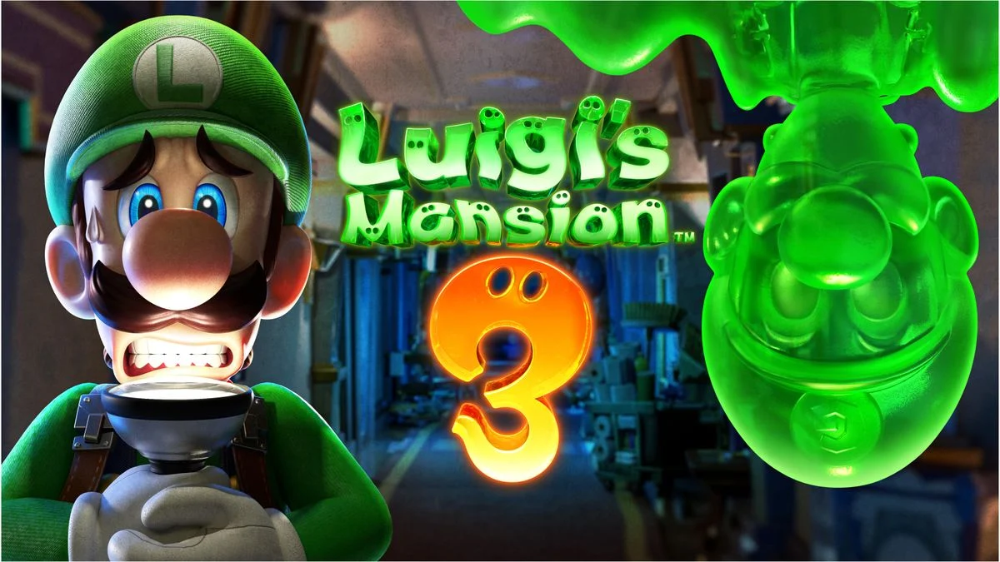
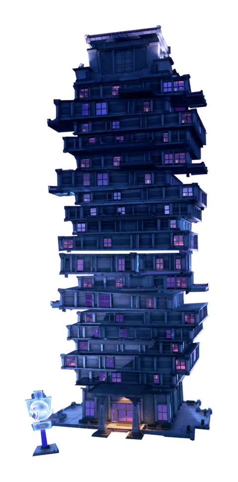

Luigi's Mansion 3 Scarescraper Guide
 
Welcome to the Luigi's Mansion 3 Scarescraper guide! Here you can find many information
of what you need to know how Scarescraper works.
This guide intended for beginners and intermediate players but all users are welcome.
Guides include:
Guides include:
- All 6 missions, including Capture the Ghosts, Collecting Money, Saving the Toads, and more!
- All information on how Rare Ghosts works.
- How ghosts spawn.
- And much more!